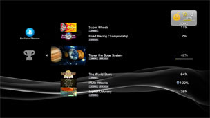

PlayStation™Network > Trophäen-Sammlung
Trophäen-Sammlung
Wenn Sie in Spielen, die die Trophäenfunktion unterstützen, bestimmte Ziele erreichen, können Sie eine Trophäe gewinnen. Die gewonnenen Trophäen werden auf dem PS3™-System gespeichert.
Typen von Trophäen
Die Trophäen werden in vier Kategorien eingeteilt. In der Regel basieren die Kategorien auf dem Schwierigkeitsgrad, den Sie meistern müssen, um eine Trophäe zu gewinnen. Welche Typen von Trophäen zur Verfügung stehen und unter welchen Bedingungen Sie eine Trophäe gewinnen können, hängt vom Spiel ab.
Anzeigen der Trophy Collection (Trophäen)
1. |
Wählen Sie |
|---|---|
|
|
|
2. |
Wählen Sie das Spiel aus, für das Informationen angezeigt werden sollen. |
|
|


Speichern der Trophäeninformationen auf dem PSNSM-Server
Wenn Sie sich bei einem Sony Entertainment Network-Konto angemeldet haben, können Sie Informationen zu den Trophäen, die Sie gewonnen haben, auf dem PSNSM-Server speichern. Zum Speichern der Informationen auf dem Server oder zum Anzeigen der Trophäeninformationen müssen Sie am PSNSM angemeldet sein.
Informationen zu Trophäen werden in folgenden Fällen automatisch auf dem PSNSM-Server gespeichert:
- Bei Auswahl von
 (PlayStation™Network) >
(PlayStation™Network) >  (Trophäen-Sammlung)
(Trophäen-Sammlung) - Bei Auswahl von (Trophäen vergleichen) unter
 (Freunde) > [Profil]
(Freunde) > [Profil]

Anmerkungen
- Wenn Sie beim PSNSM mit einem Konto angemeldet sind, das mit Ihrem PlayStation®4-System oder PlayStation®Vita-System verknüpft ist, können Sie auch die auf diesen Systemen verdienten Trophäen anzeigen.
- Melden Sie sich am PSNSM an, wählen Sie (Trophäen-Sammlung) unter (PlayStation™Network), drücken Sie die
 -Taste und wählen Sie dann [Modus umschalten] aus dem Menü „Optionen“, um in den [Offline-Modus] zu wechseln. Im [Offline-Modus] können Sie die auf dem PS3™-System gespeicherten Trophäeninformationen anzeigen.
-Taste und wählen Sie dann [Modus umschalten] aus dem Menü „Optionen“, um in den [Offline-Modus] zu wechseln. Im [Offline-Modus] können Sie die auf dem PS3™-System gespeicherten Trophäeninformationen anzeigen. - Wenn ein Spiel als Full-Game-Testversion (ein PlayStation®Plus-Service) heruntergeladen wird, werden die im Spiel gewonnenen Trophäen nicht auf dem PSNSM-Server gespeichert. Wenn Sie das Spiel kaufen, werden die vor dem Kauf gewonnenen Trophäen auf dem PSNSM-Server gespeichert.
Festlegen der Gruppe von Spielern, die von Ihnen gewonnene Trophäen sehen können
Sie können die Gruppe der Spieler, die von Ihnen gewonnene Trophäen sehen können, über (PlayStation™Network) > [Konto-Verwaltung] > [Privatsphäre-Einstellungen] festlegen.
Sie können für jedes Spiel einstellen, ob die Trophäen angezeigt werden sollen, die Sie gewonnen haben. Gehen Sie zu (PlayStation™Network) > (Trophäen-Sammlung), um das einzustellende Spiel auszuwählen, drücken Sie die -Taste und wählen Sie dann [Privatsphäre-Einstellungen] aus dem Optionsmenü. Deaktivieren Sie [Trophäen für dieses Spiel anzeigen], um die Informationen zu Trophäen nur für das ausgewählte Spiel zu verbergen.
Anmerkungen
- Wenn Sie bei den Einstellungen für die Veröffentlichung von Trophäen unter (PlayStation™Network) > [Konto-Verwaltung] > [Privatsphäre-Einstellungen] die Option [Von niemandem] auswählen, hat diese Einstellung Vorrang. Das heißt, die Informationen zu Trophäen werden auch dann nicht verfügbar gemacht, wenn das Kontrollkästchen [Trophäen für dieses Spiel anzeigen] für die einzelnen Spiele markiert ist.
- Wenn Sie die Informationen zu Trophäen niemandem zugänglich machen, sieht es für andere Spieler so aus, als hätten Sie keine Trophäen gewonnen.
- Sie können nicht für jedes Spiel getrennt festlegen, für wen die Informationen zugänglich gemacht werden sollen.
Vergleichen des Status der gewonnenen Trophäen mit Freunden
Sie können in (Freunde) den Status der gewonnenen Trophäen mit Ihren Freunden vergleichen.
Einzelheiten dazu finden Sie unter (Freunde) > [Liste der Freunde] > [Anzeigen von Profilen].